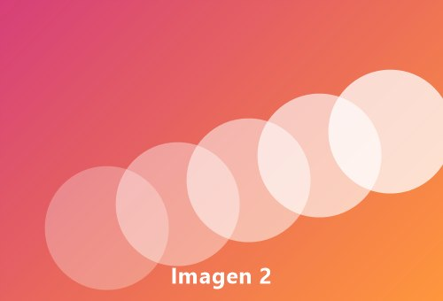

Juan Carlos Camarena Pillado

La propiedad float coloca la imagen a la izquierda o a la derecha del texto. Las propiedades padding y margin permiten controlar los espacios en blanco alrededor de la imagen, y la propiedad border pone un borde o marco alrededor de ella.
Mientras la imagen está flotando, el texto la rodea y ocupa el espacio que queda libre en la página, igual que en una revista.
Imagen sin texto lateral, centrada con text-align.